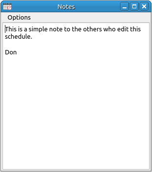

Note Editor
This is a simple text editor for the user to add notes to the schedule.

Options:
- Open: Opens and loads in a text file.
- Save As: Saves the contents of the editor to a text file.
- Print: This will send the text to the selected printer.
- Print Preview: This will invoke the print preview dialog for the text.